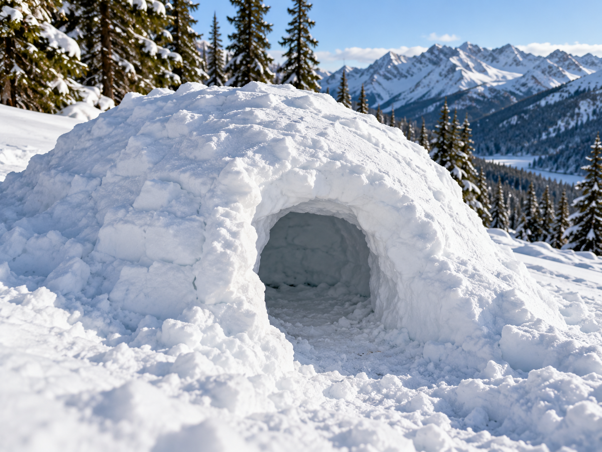

Snow Shelter

Snow can sometimes be used to create temporary protection in snowy environments.
What It Is
A snow shelter is a temporary structure that uses snow as part of its walls or covering. Snow can help block wind and provide insulation.
When to Use It
Snow shelters are associated with cold and snowy environments where protection from wind and cold is important.
How It Works
Snow is shaped or dug to create a protected space. The exact design depends on the snow, weather, location, and available equipment.
Materials Needed
- Deep or suitable snow
- Snow shovel if available
- Warm clothing
- Insulation from the ground
Source
Outdoor preparation and shelter information: National Park Service - Ten Essentials